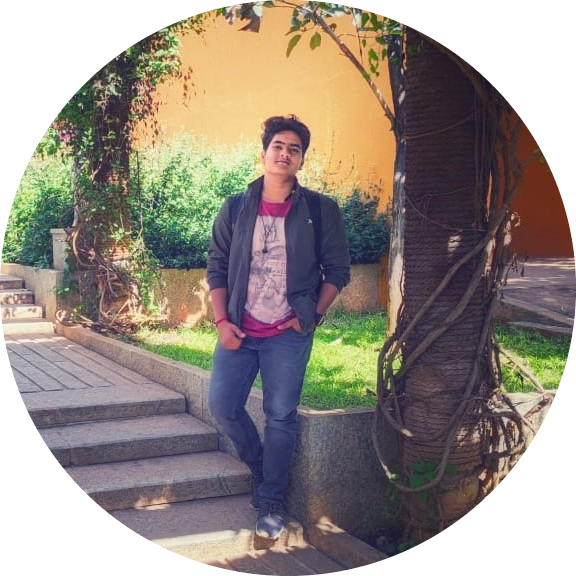

|  |
Jon Kleinberg
Tisch University Professor
Deparment of Computer Science
Department of Information Science
Cornell University
Ithaca.NY 14853
|
I am a professor at Cornell University. My research focuses on algorithms and networks, the roles they play in large-scale social and information systems, and their broader societal implications. My work has been supported by an NSF Career Award,
an ONR Young Investigator Award, a MacArthur Foundation Fellowship, a Packard Foundation Fellowship, a Simons Investigator Award, a Sloan Foundation Fellowship, a Vannevar Bush Faculty Fellowship, and grants from Facebook, Google, Yahoo, the
MacArthur Foundation, the ARO, and the NSF. I am a member of the National Academy of Sciences, the National Academy of Engineering, and the American Academy of Arts and Sciences.
Books and Teaching
-
In Spring 2022, Karen Levy and I are teaching Choices and Consequences in Computing (INFO 1260 / CS 1340). The course is designed at an introductory level with no formal prerequisites, and covers a range of ethical, societal, and policy
implications of computing and information.
-
An on-line course on edX entitled Networks, Crowds, and Markets, with David Easley and Eva Tardos.
-
Recent courses at Cornell:
-
The Structure of Information Networks (CS 6850).
-
Networks (with David Easley and Eva Tardos; ECON 2040 / SOC 2090 / CS 2850 / INFO 2040).
Advising
-
Current and former Ph.D. students: Anna Evtushenko, Katherine Van Koevering, Kate Donahue, Katy Blumer, Michela Meister, Kiran Tomlinson, Cazamere Comrie, Marios Papachristou, Yanbang Wang, Manish Raghavan (MIT), Maithra Raghu (Google), Rediet
Abebe (Berkeley; Harvard Society of Fellows), Rahmtin Rotabi (Google), Isabel Kloumann (Facebook), Johan Ugander (Stanford), Sigal Oren (Ben-Gurion Univ), Daniel Romero (U. Michigan), Lars Backstrom (Facebook), Alex Slivkins (Microsoft
Research), Mark Sandler (Google), Elliot Anshelevich (RPI), David Kempe (USC), Amit Kumar (IIT Dehli), Debra Goldberg (CU Boulder).
-
Current and former postdocs: Lydia Liu, Jonas Juul, Nate Veldt (TAMU), Hoda Heidari (CMU), Austin Benson (Cornell), Flavio Chierichetti (Sapienza University of Rome), Jure Leskovec (Stanford), Sid Suri (Microsoft Research), Gregory Kossinets.
(Google), Mohammad Mahdian (Google), Frank McSherry (Microsoft Research) Anupam Gupta (CMU).
Skill
| iOS Development |
⭐⭐⭐⭐⭐ |
| Android Development |
⭐⭐⭐⭐ |
| Java Script |
⭐⭐⭐⭐⭐ |
| Photography |
⭐⭐⭐⭐⭐ |
Contact Me